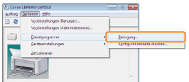

Wenn auf den Ausdrucken Verschmierungen zu sehen sind, reinigen Sie die Fixierwalze folgendermaßen.
 |
Für die Reinigung der Fixierwalze wird A4-Normalpapier benötigt. Halten Sie A4-Normalpapier bereit.
|
1
Legen Sie A4-Normalpapier in das Mehrzweck-Papierfach ein.
2
Klicken Sie im Windows-Taskfach auf [  ], und wählen Sie dann den Druckernamen aus.
], und wählen Sie dann den Druckernamen aus.
], und wählen Sie dann den Druckernamen aus.3
Wählen Sie aus dem Menü [Optionen] die Option [Dienstprogramm] → [Reinigung] aus.

4
Klicken Sie auf [OK].
|
→
|
Das Papier wird eingezogen, und der Drucker beginnt mit der Reinigung der Fixierwalze.
|
|
HINWEIS
|
||
|
Dauer der Reinigung
Es werden ca. 86 Sekunden benötigt.
|